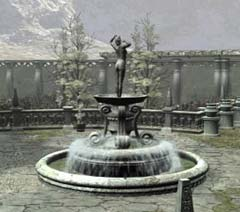
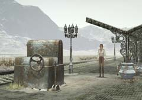

| 概要 | 地図 | |
| 淡いヒント集 | ヒント集 | 的確なヒント集 |
| 攻略最短ルート | Syberia 攻略へ |
| 地域選択へ | 次の段階へ >> |
バロクシュタット
噴水
 ・豪華な彫刻が付いた噴水である。 ・いい見物になる。 ・しかし、この水がこぼれたらすぐに凍ってしまい、ホテルは迷惑になるだろう。
ゼンマイを巻く装置
 ・駅にある。 ・ここにあると言うことは、いずれは機関車でここへくることになるのだろうか?
ホテルのロッカー

・ロッカーである。何があるか? ・手に入るアイテムは、どう使えばよいか? ・一つではなく、組み合わせて使うのだろうか?
ホテルのおじさん

・彼はサッカーに熱中しているときがある。その場合は、どうやって話しかけるか? ・ホテルの奥へ通してくれるか? ・通してくれないのならば、どうやって中にはいるのか? |
| 地域選択へ | 次の段階へ >> |
| 概要 | 地図 | |
| 淡いヒント集 | ヒント集 | 的確なヒント集 |
| 攻略最短ルート | Syberia 攻略へ |
Syberia
| 目次へ戻る | ページの上部へ |